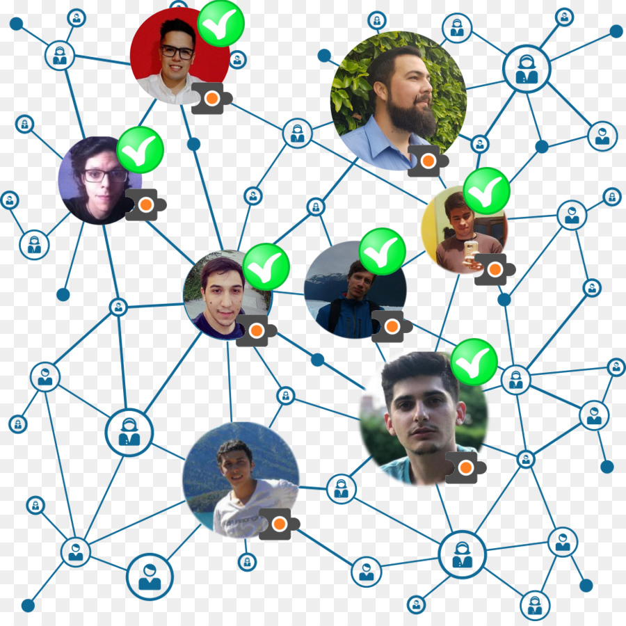

Tecnologia Blockchain
Empecemos con un ejemplo de transacción típico

Rony tiene millones
Y desea hacerle una transaccion a Gaston de $1000
Los bancos actúan como intermediario de esa y otras muchas transacciones, centralizando de forma efectiva el movimiento de capital de un lado a otro.

Ambos dependen de esos bancos y de su forma de hacer las cosas para completar esa transacción. Están sujetos a sus condiciones (y a sus comisiones, por supuesto T.T).
Las cadenas de bloques (blockchain), básicamente elimina a los intermediarios, descentralizando toda la gestión. El control del proceso es de los usuarios, no de los bancos.

Rony tiene millones

Y desea hacerle una transaccion a Gaston de $1000

La transaccion se representa en la red como un bloque

El bloque se transmite a todas las partes de la red
El bloque se transmite a todas las partes de la red

Los que estan en la red aprueban que la transaccion es válidaEl bloque entonces puede añadirse a la cadena, lo cual proporciona un registro indeleble y transparente sobre las transacciones